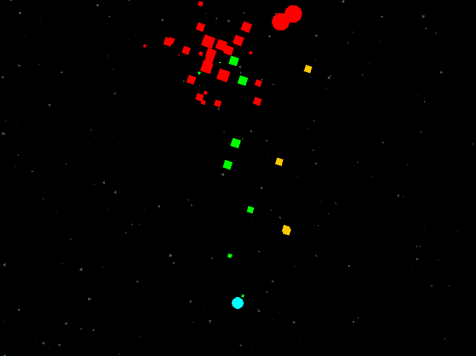

Computational Play Project

The Computational Play project aims to build an artificial intelligence that can play with a human. Check out the project page for more info.
Procedural Game Mechanics

The goal is to build a shoot-em-up game where the mechanics can be altered in real time to produce many different game types. The project [in its current form] is complete, and the code can be found here. You can find a pdf of the resulting research paper here.